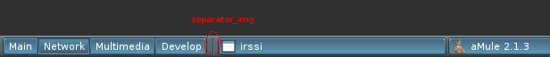
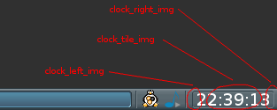
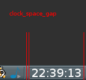
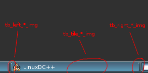
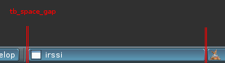
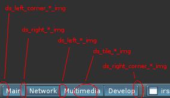
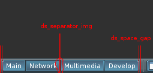

quick links:
[[
forums ::
last version ::
nsf pub git repo ::
git repo mirror on github.com ]]
BMPanel
BMPanel is a lightweight panel with taskbar, tray, desktop switcher and clock.
It is themeable reincarnation of fspanel. Panel should work with NETWM (aka
EWMH) compliant window manager (tested on openbox3). Systray follows only
systray-spec, KDE tray is not supported (cause there is standard, everything
else must die).
BMPanel uses imlib2, freetype2, Xlib, libev.

(themes/native theme on screenshot)

(arch theme on screenshot, new composite mode)
I'm interrested in various contributions like:
- themes
- screenshots
- bug report (if any) and bug fixes
- simple feedback (what do you like and what you do not like in bmpanel)
You can find my mail in themes/native/theme file ;)
Forum
Kinda official forum here: http://www.punbb-hosting.com/forums/bmpanel
Git
There is an address of my public git repo where bmpanel is located: http://jiss.convex.ru (gitweb + git-daemon).
If link isn't responding, probably my PC is offline. Repo is located on my home workstation which has no 24/7 uptime.
For lazy people - copy 'n' paste 'n' execute this command: git clone git://jiss.convex.ru/bmpanel.git
I think it is very unlikely that you will see changes in git repo, which are not introduced in source package,
because I like to release products often. I gave you a link to git repo in case if you are a developer and want to contribute to bmpanel.
Git pulling is just prefereable way for me to get your patch. So, if you are a package maintainer, there is no point to make the 'bmpanel-git' package.
24/7 online git copy is available on github hosting here. If you're creating bmpanel-git package, please use this git repo.
Files
See INSTALL for install notes.
bmpanel-0.9.15.tar.gz
bmpanel-0.9.21.tar.gz
arch.tar.gz - 'arch' theme (showing new argb skinning abilities)
Notice! As of version 0.9.16, bmpanel uses new fontconfig font searching style. If you are using
custom themes, you should fix them. No font filenames now! Only font names. See: fontconfig user manual.
But as before, only ttf fonts are allowed. Quick examples:
DejaVuSans-14
DejaVuSans-8:bold
Verdana-12:italic
archlinux users may find PKGBUILD in AUR, or simply use 'yaourt -S bmpanel'
Themes
(correct for last release)
Themes are very simple. Theme files must be in separate directory and must
have the "theme" file. Theme file is a simple configuration file, which contains
key/value pairs. Theme parser can parse three types of lines:
1. empty line - first symbol is '\n', empty lines are skipped
2. comment line - first symbol is '#', comment lines are skipped too
3. key/value line - first word is key and everything else on the line is the value
All keys are predefined by the panel itself. Values have different types, such as:
1. [string] - text string ;)
2. [integer] - integer number
3. [image] - image file name, for example: "linux.png"
4. [font] - the fontconfig search pattern, see: fontconfig user manual
5. [color] - six letters (hex representation of color), just like in html, but without '#'. I.e. example: FF00ff
6. Everything else is considered to be a special value, it could be part of enumeration, or a specially parsed string.
Let's take a look at themes/native/theme files. For example, if there are
four sections (general, clock, taskbar, desktop switcher) then:
* general *
name [string] - theme name
author [string] - theme authors name
version_major [integer] - major version number
version_minor [integer] - minor version number
First four lines are basic information about the theme, and are currently not used anywhere, but possibly it could be
used in some kind of a theme browser.
use_composite [integer] - 1 to use composite/render extensions for rendering and 0 to don't use.
height_override [integer] - force height of a panel to this value, usable for themes with a lot of transparent stuff.
placement [enum:bottom|top] - bmpanel placement
tile_img [image] - background horizontal tile image
separator_img [image] - separator image, which is placed between panel, to separate elements such as taskbar, clock, etc.

tray_icon_w [integer] - tray icon width
tray_icon_h [integer] - tray icon height
tray_space_gap [integer] - space between tray icons and separators
tray_icons_spacing [integer] - space between tray icons
elements [string] - special string, which defines tray order and
presence of elements in the panel: 's' - desktop switcher, 'b' - taskbar, 't' -
tray, 'c' - clock, for example: sbtc (desktop switcher then taskbar then
tray then clock), taskbar gets all the empty space left, and defines alignment of other
elements
That's it, all general key/values. Then following configuraion for each element:
* clock *
clock_right_img [image] - right corner of clocks background
clock_tile_img [image] - clock background tile image
clock_left_img [image] - left corner of clocks background

clock_font [font] - clock font, better if all numbers have fixed width
clock_text_color [color] - color of the clock text (white on screenshot)
clock_text_offset_x [integer] - horizontal clock text offset, in case you want to move
the text, to fit the theme do it here
clock_text_offset_y [integer] - same as horizontal offset, but vertical
clock_text_padding [integer] - how many pixels clock's background wider than text
clock_text_align [enum:left|right|center] - text alignment
clock_space_gap [integer] - separator gap between separators and clock
clock_format [string] - clock text format (%H:%M:%S for hours:minutes:seconds)

* taskbar *
tb_right_*_img [image] - right corner of taskbar's buttons
tb_tile_*_img [image] - tile image of taskbar's buttons
tb_left_*_img [image] - left corner of taskbar's buttons

tb_default_icon_img [image] - default icon for taskbar buttons (in case if program didn't supply one)
tb_font [font] - font of button's captions
tb_text_color_* [color] - color of button's captions
tb_text_offset_x [integer] - same as in clock, but for buttons text
tb_text_offset_y [integer] - same as in clock, but for buttons text
tb_text_align [enum:left|right|center] - same as in clock, but for button's text
tb_separator_img [image] - optional separator image, inserted between taskbar's buttons
tb_icon_offset_x [integer] - same as text offset but for icons
tb_icon_offset_y [integer] - same as text offset but for icons
tb_icon_w [integer] - icon width, better if it has the same width as tb_default_icon_img
tb_icon_h [integer] - icon height, better if if has the same height as tb_default_icon_img
(if icon width/height equals zero, the icons are not drawn)
tb_space_gap [integer] - empty space (gap) between taskbar buttons and separators

* desktop switcher *
ds_left_corner_*_img [image]
ds_right_corner_*_img [image]
ds_right_*_img [image]
ds_tile_*_img [image]
ds_left_*_img [image] - see these on screenshot below, this should be pretty much self-explanatory

ds_font [font] - boring stuff..
ds_text_color_* [color] - boring stuff..
ds_text_offset_x [integer] - even more boring stuff here..
ds_text_offset_y [integer] - even more boring stuff here..
ds_text_padding [integer] - same as in other elements
ds_text_align [enum:left|right|center] - same as in other elements
ds_space_gap [integer] - see screenshot below
ds_separator_img [image] - see screenshot below

Most of the images, and some of integers are not necessary. See themes/redmini for a minimalistic example.